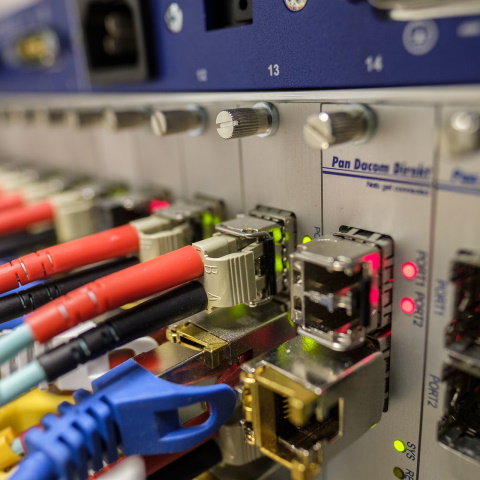

A Complete Digitally Emulated Network
During my junior year at Liberty University, I was given the opportunity to collaborate with a team on a project to design and implement a functioning virtual computer network. This project was to give experience to students in setting up and administering computer networks without needing the physical hardware as well as the money and physical space that they require. The team was composed of five individuals, with no set person being a team leader.
The goal of this project was to create a fully functioning computer network for a fictional company with two separate buildings, an administration building and a production building, set several miles apart. The administration building would have two separate office areas, as well as a basement server room. In the production building, there is only one open area that requires internet connection as opposed to the three separate areas that the administration building requires. Lastly, there would need to be separate WAN access enabled for remote access to the company's network.
To create and emulate this network virtually, we used Cypherpath's Software Defined Infrastructure (SDI) system. This is a cloud-based operating system that allows both the creation of abstract network infrastructure and the emulation of said network structure by allowing real-time access to virtual machines placed within the SDI system. The SDI system acts as a sort of workbench for creating a network, allowing you to place routers, switches, hubs, firewalls, virtual machines, servers, etc., while also allowing you to change the properties of the network as needed to build your desired network architecture. Below is the diagram of our final product as shown in the Cypherpath SDI system.
When creating our network within the SDI system, we tackled the needs of the administration building first, as this was the primary building of business operations. The first thing we set up within the administration building was a VyOS router and switches for all of our connections: two switches for the office areas, one switch for the server basement, and another switch to connect to a future firewall. Both of the office areas had five Kali Linux machines connected to their respective switches, while the basement switch had two Ubuntu Linux servers connected to it. Lastly, we then set up our pfSense firewall connected to the last administration building switch, with another Kali Linux machine connected on the same switch to establish firewall rules and to look through any logs recorded from the firewall.
The next building we tackled was the production building, which is theoretically stationed several miles apart. To establish same-network access between the two buildings, a hub was established from the firewall to the VyOS router this building would house. A Kali Linux machine was then attached to the hub to sniff packets for security purposes. Next, a single switch was then connected to the router with four machines connected to it: two programmable logic controllers (PLCs) and two Kali Linux machines that could be used for either human-machine interfaces (HMI), supervisory control and data acquisition (SCADA), and/or distributed control systems (DCS).
Finally, we set up the network's WAN access. We accomplished this by setting up an external dedicated WAN switch to the firewall connected to two systems- a Kali Linux machine and an Ubuntu server. These machines would allow designated individuals to remote in and access the network directly, while also collectively connecting the entire network to the internet. With this we completed the design of the company's full network as instructed, achieving all of the connectivity needs of the company.